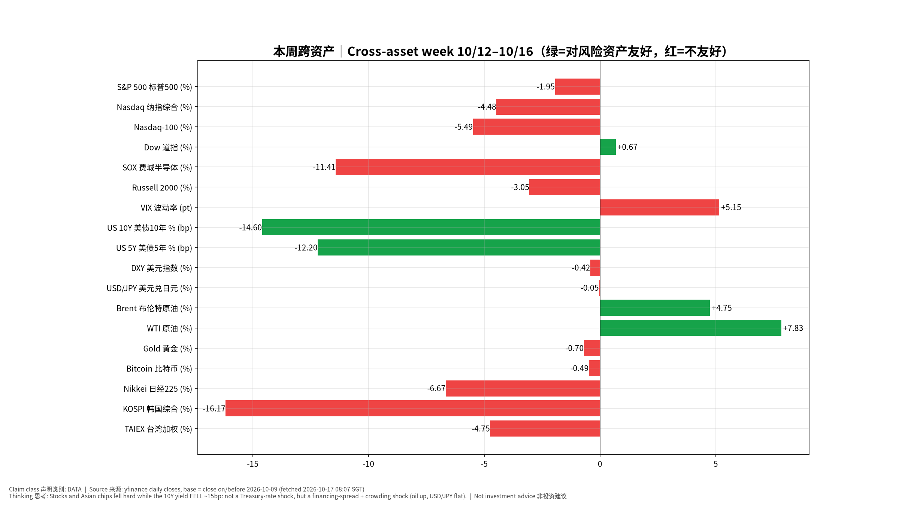
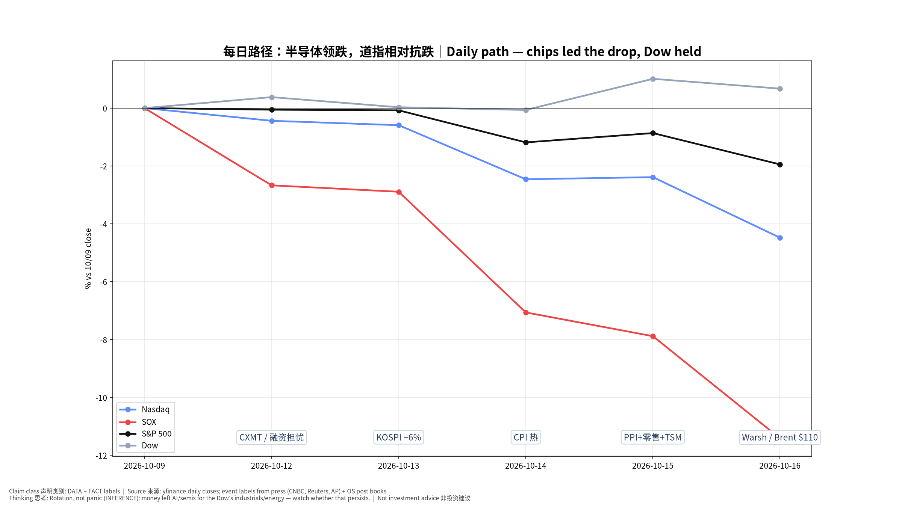
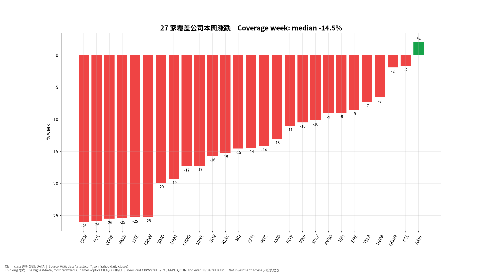
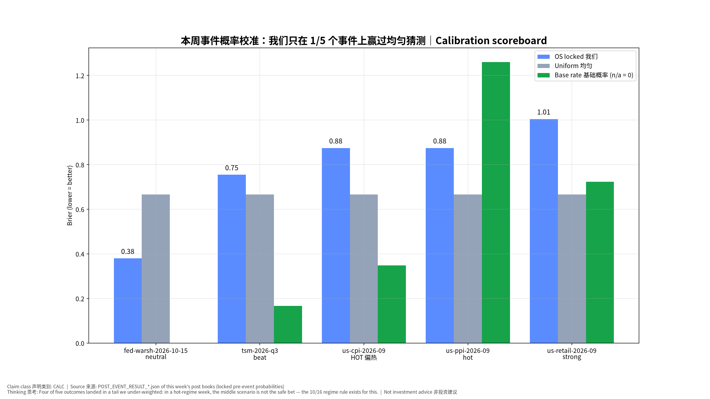
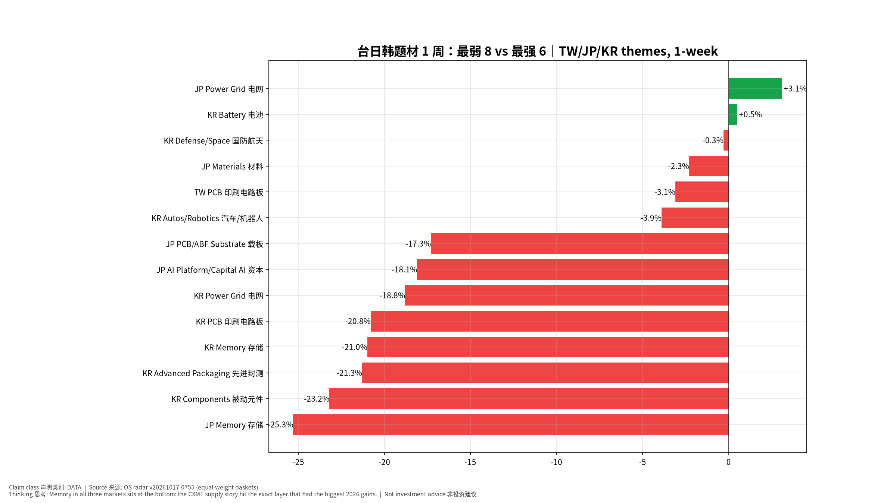
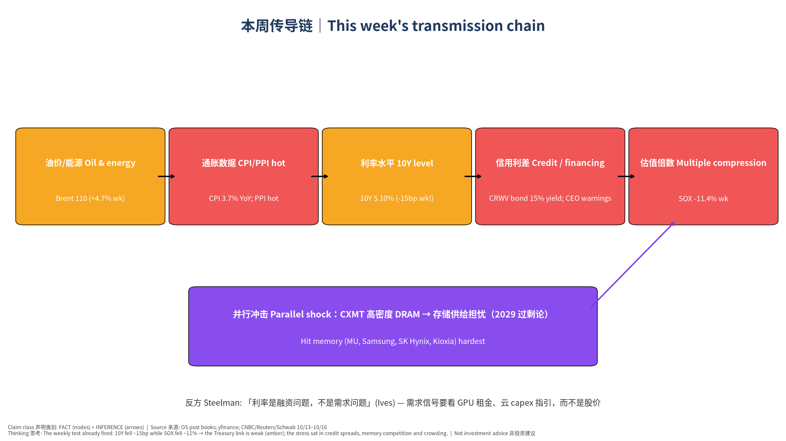

版本 v20261017-0807-2026-W42｜生成 2026-10-17 08:07 SGT｜周六例行｜非投资建议 Not investment advice｜数字：yfinance 日收盘（以 2026-10-09 收盘为基准）、本系统事件书、带日期的新闻来源；推断已标注。
⏱ 30秒看懂
🗺 阅读地图
| 你有多少时间 | 读哪里 |
|---|---|
| 2 分钟 | ⏱30秒 + 图1 跨资产 + 图4 校准记分牌 |
| 10 分钟 | 加读 §1 发生了什么、§3 覆盖公司、§4 事件复盘汇总 |
| 30 分钟 | 全读，含 §6 传导链与对立观点、§7 模型进化、§9–11 来源/假设/模型来源、自我测验 |
层级说明：L1 故事（人人能懂）→ L2 关键数字（带解释）→ L3 专业细节（网页可折叠，默认收起）。
| 时间 | 事件 | 来源 | 类别 |
|---|---|---|---|
| 10/10–12 周末–周一 | 长鑫存储 CXMT 宣布新架构、更高密度的服务器 DRAM 进展，存储股开始下跌；周一 SOX −2.7%，三星 −10%、SK 海力士 −8%。 | cn13 / reu | FACT |
| 10/12 周一 | 博通 CEO 陈福阳与英特尔 CEO 警告：融资可能成为 AI 扩张的主要阻力（陈称可能比芯片或电力短缺更大）。 | cn15 | FACT |
| 10/13 周二 | KOSPI 盘中跌逾 6%（韩国芯片股连跌第五日），铠侠 −13%；CoreWeave 6 月发行的债券收益率升至 15%（发行时 9.625%）。 | reu | FACT |
| 10/14 周三 | 9 月 CPI 同比 3.7%、环比 0.6%（汽油推动），核心同比 2.6% → 本系统判定「偏热」。 | OS CPI post book | FACT |
| 10/15 周四 | PPI 偏热、零售总额强但控制组弱；台积电营收 $46.72bn 超指引上沿；截至周四，全球市值最大的 20 只 AI/半导体股本周合计蒸发逾 1 万亿美元（CNBC）。 | OS post books / cn15 | FACT |
| 10/16 周五 SGT | Warsh 在曼谷 IMF 对谈中不预判 10 月 → Kalshi 10 月加息概率约 30%→13–15%，12 月约 76–78% 不变。 | cnw / OS Warsh post book | FACT + MARKET-IMPLIED |
| 10/16 周五 US | 科技股抛售延续：纳指 −2.1%、标普 −1.1%；SOX −3.83%；VIX 升近 21% 至 20 附近；布伦特盘中触及 $110（5 月来首次，霍尔木兹局势）；CoreWeave 跌近 12%，周跌逾 25%。全周纳指为 6 月下旬以来最差。 | ap / sch / yh | FACT |
来源链接：Reuters 10/13｜CNBC 10/13｜CNBC 10/15 AI rout｜CNBC 10/15 memory｜Schwab 10/16｜AP 10/16｜Yahoo Finance 10/16｜CNBC Warsh 10/16
| 资产 | 上周五收盘 | 本周五收盘 | 周变化 |
|---|---|---|---|
| S&P 500 标普500 | 7811.54 | 7659.44 | -1.95% |
| Nasdaq 纳指综合 | 27366.17 | 26140.03 | -4.48% |
| Nasdaq-100 | 30883.15 | 29187.55 | -5.49% |
| Dow 道指 | 51654.95 | 52002.41 | +0.67% |
| SOX 费城半导体 | 12572.42 | 11137.29 | -11.41% |
| Russell 2000 | 2806.98 | 2721.37 | -3.05% |
| VIX 波动率 | 14.84 | 19.99 | +5.15 pt |
| US 10Y 美债10年 % | 5.24 | 5.10 | -14.60 bp |
| US 5Y 美债5年 % | 5.02 | 4.90 | -12.20 bp |
| DXY 美元指数 | 102.21 | 101.78 | -0.42% |
| USD/JPY 美元兑日元 | 158.06 | 157.99 | -0.05% |
| Brent 布伦特原油 | 104.72 | 109.69 | +4.75% |
| WTI 原油 | 91.85 | 99.04 | +7.83% |
| Gold 黄金 | 4216.30 | 4186.70 | -0.70% |
| Bitcoin 比特币 | 82546.32 | 82141.46 | -0.49% |
| Nikkei 日经225 | 69030.92 | 64425.95 | -6.67% |
| KOSPI 韩国综合 | 6625.93 | 5554.22 | -16.17% |
| TAIEX 台湾加权 | 49313.44 | 46969.87 | -4.75% |

📊 怎么看这张图

📊 怎么看这张图

📊 怎么看这张图
| Ticker | 上周五 | 本周五 | 周变化 |
|---|---|---|---|
| AAPL | 336.64 | 343.46 | +2.0% |
| CCL | 26.35 | 25.90 | -1.7% |
| QCOM | 175.50 | 172.11 | -1.9% |
| NVDA | 229.28 | 214.13 | -6.6% |
| TSLA | 382.70 | 354.72 | -7.3% |
| EME | 789.03 | 721.66 | -8.5% |
| TSM | 453.31 | 412.61 | -9.0% |
| AVGO | 361.54 | 328.75 | -9.1% |
| SPCX | 162.57 | 146.03 | -10.2% |
| PWR | 705.94 | 631.86 | -10.5% |
| PLTR | 209.05 | 186.03 | -11.0% |
| AMD | 608.10 | 528.75 | -13.0% |
| INTC | 104.70 | 89.85 | -14.2% |
| ARM | 266.28 | 227.80 | -14.5% |
| MU | 1028.84 | 878.84 | -14.6% |
| KLAC | 195.57 | 165.74 | -15.3% |
| GLW | 156.68 | 132.00 | -15.8% |
| MRVL | 275.28 | 227.83 | -17.2% |
| CRWD | 275.04 | 227.39 | -17.3% |
| AMAT | 507.03 | 409.29 | -19.3% |
| SIMO | 263.90 | 211.30 | -19.9% |
| CRWV | 82.08 | 61.39 | -25.2% |
| LITE | 1103.36 | 824.13 | -25.3% |
| RKLB | 68.21 | 50.84 | -25.5% |
| COHR | 312.62 | 232.90 | -25.5% |
| MXL | 96.16 | 71.32 | -25.8% |
| CIEN | 449.77 | 332.73 | -26.0% |
估值说明：本周的价格下跌本身不是「重大信息」；公司模型只做机械刷新（价格、市值、隐含增速），未改动任何公司的情景假设。唯一有公司层面新信息的是 TSM（财报，见事后书），结论：结构不变。
| 事件 | 事后书版本 | 结果（锁定规则） | 我们锁定的概率 | Brier 我们 | Brier 均匀 | Brier 基础概率 |
|---|---|---|---|---|---|---|
| Fed Chair Warsh x IMF Georgieva | v20261017-0801-post | neutral | {“hawkish”: 0.3, “neutral”: 0.5, “dovish”: 0.2} | 0.38 | 0.667 | None |
| TSM Q3 2026 Earnings | v20261016-0802-post | beat | {“beat”: 0.3, “inline”: 0.45, “miss”: 0.25} | 0.755 | 0.667 | 0.167 |
| US CPI Sep 2026 | v20261015-0800-post | HOT 偏热 | 见书内 | 0.875 | 0.667 | 0.349 |
| US PPI Sep 2026 | v20261016-0759-post | hot | {“cool”: 0.25, “inline”: 0.5, “hot”: 0.25} | 0.875 | 0.667 | 1.261 |
| US Retail Sales Sep 2026 | v20261016-0800-post | strong | {“weak”: 0.25, “inline”: 0.55, “strong”: 0.2} | 1.005 | 0.667 | 0.724 |

📊 怎么看这张图
本周共性错误（Error classification）： 1. 概率校准（Probability Calibration）：CPI、PPI、零售、TSM 四个事件结果都落在尾部（偏热/偏强/超预期），而我们中间情景给了 45–55%。已修正：10/16 上线「状态感知校准」（VIX>20 或 MOVE 高 或最近 3 个宏观事件落在尾部 → 中间情景封顶 45%）。下周起所有事前书生效。 2. 市场反应映射（Market-Reaction）：TSM「好成绩、股价跌」；Warsh「中性措辞、市场读成偏鸽」。共同点：价格由板块/路径定价决定，而不是事件本身。已加入：财报 beat 拆成「顺风 beat / 逆风 beat」两套剧本；央行讲话加「其他官员言论汇总」。 3. 做对的：Warsh 措辞判断（中性 50% 命中）；TSM 基本面链条（AI 需求、N2 爬坡、指引）全部成立。
| 市场 | 题材 | 1 周 | 1 月 | 状态 |
|---|---|---|---|---|
| JP | Memory 存储 | -25.3% | -25.7% | WEAK 弱 |
| KR | Components 被动元件 | -23.2% | -15.1% | WEAK 弱 |
| KR | Advanced Packaging 先进封测 | -21.3% | -9.1% | WEAK 弱 |
| KR | Memory 存储 | -21.0% | -23.4% | WEAK 弱 |
| KR | PCB 印刷电路板 | -20.8% | -9.6% | WEAK 弱 |
| KR | Power Grid 电网 | -18.8% | -28.6% | WEAK 弱 |
| JP | AI Platform/Capital AI 资本 | -18.1% | -24.3% | WEAK 弱 |
| JP | PCB/ABF Substrate 载板 | -17.3% | -0.0% | WEAK 弱 |
| KR | Autos/Robotics 汽车/机器人 | -3.9% | -18.4% | WEAK 弱 |
| TW | PCB 印刷电路板 | -3.1% | +22.1% | STRONG 强 |
| JP | Materials 材料 | -2.3% | +4.5% | WEAK 弱 |
| KR | Defense/Space 国防航天 | -0.3% | -17.9% | WEAK 弱 |
| KR | Battery 电池 | +0.5% | +11.9% | STRONG 强 |
| JP | Power Grid 电网 | +3.1% | +11.5% | STRONG 强 |

📊 怎么看这张图

📊 怎么看这张图
ΔPrice 分解（INFERENCE，非精确归因）：ΔPrice ≈ ΔEPS（本周未见盈利预期下调的证据：TSM 给出全年美元营收增长约 44%）+ ΔMultiple(利率)（10Y 水平仍在 5% 以上，但本周下降约 15bp → 本周贡献小）+ ΔMultiple(AI 叙事 / 信用利差)（新云融资可持续性、存储竞争）+ ΔPositioning（今年 SOX 涨幅大、拥挤）+ ΔLiquidity（日元稳定，套息压力未爆发）。本周主要是倍数和仓位，不是盈利。
我们的观点：本周是「融资利差 + 拥挤去杠杆 + 存储竞争」驱动的估值回调，AI 需求本身没有出现恶化证据。
对立观点最强版本： 1. 这次不一样：融资问题会变成需求问题——如果新云（CRWV 等）借不到钱，它们就买不了 GPU，NVDA/存储的订单会被砍。 2. CXMT 的进展是真实的结构性威胁，存储的超级周期可能提前结束。 3. TSM 超预期股价仍跌，说明市场已经开始「不为好消息买单」——典型的周期顶部特征。
| 证据 | 支持我们 | 支持对立 | 权重 |
|---|---|---|---|
| TSM 营收超指引、全年美元营收增长约 44% | ✔ | 高 | |
| CRWV 债券收益率 15%、股价周跌逾 25% | ✔ | 高 | |
| 博通/英特尔 CEO 警告融资阻力 | ✔ | 中 | |
| Ives：「利率是融资问题，不是需求问题」 | ✔ | 低（观点） | |
| 道指本周上涨、没有整体恐慌 | ✔ | 中 | |
| 存储 2029 过剩论仅一篇专栏、未被其他分析师附和（CNBC） | ✔ | 中 |
裁判：证据仍偏向「估值/仓位回调」，但对立观点第 1 点是本周最该认真对待的：融资→需求的传导一旦出现，我们的结论就会翻转。证伪信号：新云下调 capex、GPU 租金下跌、大型云厂商在财报中放缓 capex 指引。
| 日期 | 事件 | 状态 |
|---|---|---|
| 2026-10-21 | SPCX earnings + call 财报 | TENTATIVE (Yahoo calendar; confirm on IR) |
| 2026-10-22 | TSLA earnings + call 财报 | TENTATIVE (Yahoo calendar; confirm on IR) |
| 2026-10-23 | MXL earnings + call 财报 | TENTATIVE (Yahoo calendar; confirm on IR) |
| 2026-10-27 | GLW earnings + call 财报 | TENTATIVE (Yahoo calendar; confirm on IR) |
| 2026-10-27/28 | FOMC decision + Chair Warsh press conference｜FOMC 利率决议 | CONFIRMED (federalreserve.gov) |
| 2026-10-29 | EME earnings + call 财报 | TENTATIVE (Yahoo calendar; confirm on IR) |
| 2026-10-29 | KLAC earnings + call 财报 | TENTATIVE (Yahoo calendar; confirm on IR) |
| 2026-10-29 | PWR earnings + call 财报 | TENTATIVE (Yahoo calendar; confirm on IR) |
| 2026-10-29 | SIMO earnings + call 财报 | TENTATIVE (Yahoo calendar; confirm on IR) |
| 2026-10-29 | US GDP Q3 advance + Sep PCE | TENTATIVE (verify bea.gov) |
| 2026-10-29/30 | BOJ MPM + Outlook Report｜日本央行会议 | CONFIRMED (boj.or.jp) |
| 2026-10-30 | INTC earnings + call 财报 | TENTATIVE (Yahoo calendar; confirm on IR) |
每个重要事件都会走完整生命周期：事前书（锁定）→ 即时观察 → 事后复盘 → 模型更新。
| 内容 | 来源 | 类别 | 时间 |
|---|---|---|---|
| 指数/利率/汇率/商品/亚洲指数 | yfinance 日收盘 | DATA | 2026-10-17 08:07 SGT |
| 27 家公司价格 | data/latest/co_*.json（Yahoo） | DATA | 2026-10-17 08:07 SGT |
| 事件结果与 Brier | 本周事后书 POST_EVENT_RESULT_*.json | CALC | 各书生成时间 |
| 题材 1 周 | 雷达 v20261017-0755 | DATA | v20261017-0755 |
| 新闻时间线 | Reuters / CNBC / Schwab / AP / Yahoo（见 §1 链接） | FACT（报道） | 2026-10-13 至 10-16 |
| 下周财报日期 | Yahoo 日历 | TENTATIVE | 2026-10-17 08:07 SGT |
| # | 假设 | 类型 | 如何检验 / 失效 |
|---|---|---|---|
| 1 | 本周下跌主要是倍数/仓位而非盈利 | INFERENCE | 若下周起分析师大幅下调 FY27 EPS 则失效 |
| 2 | 压力主要在信用利差/融资可得性，而非国债利率（本周 10Y −15bp 已否定国债利率链） | INFERENCE | 若高收益信用利差收窄而 AI 股仍跌则失效 |
| 3 | 存储下跌主要因 CXMT 与过剩论 | INFERENCE | 若 DRAM 合约价出现下调报道则升级为基本面 |
| 4 | 题材篮子等权、成分少（1–4 只）代表性有限 | ASSUMPTION | 扩充成分 |
| 5 | 下周财报日期（Yahoo） | TENTATIVE | 以公司 IR 公告为准 |
构建脚本
pipeline/build_weekly.py（周六例行）；数据见来源台账；Excel
含实时公式（周变化、Brier
汇总、胜率）；不改写任何事前预测——事件概率直接读取各事后书锁定值。
✅ 自我测验 Check your understanding
答案：本周定价的主角是整个 AI 板块的估值倍数（利率、融资、拥挤），单一公司的好成绩抵不过板块的倍数收缩。
答案：说明压估值的不是「无风险利率上升」，而是①借钱最多的 AI 公司信用利差扩大（CRWV 债券收益率 15%）、②CXMT 带来的存储竞争担忧、③今年涨幅巨大后的拥挤平仓。这就是用证伪条件检验因果链：我们事先说「利率降而 AI 仍跌 → 利率链失效」，这周正好发生了。
答案：我们把最多概率放在中间情景，而高波动、热数据的环境里结果更常落在尾部；所以 10/16 加了中间情景封顶 45% 的规则。
✍ 本周作业：打开 Excel「Coverage」表，按周跌幅排序，找出跌幅最大的 5 家，查它们的资产负债率（Company 页）——验证「越依赖融资，跌越多」这个假设是否成立。
我们把本周解释为「融资利差 + 拥挤 + 存储竞争」，因为盈利预期没下调。但盈利下调总是滞后于股价——如果 10 月底云厂商财报下调 capex，那本周的下跌就是提前反映需求，而我们的「估值回调」解释就错了。下周起把「云厂商 capex 指引」放在观察清单第一位。